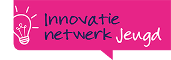
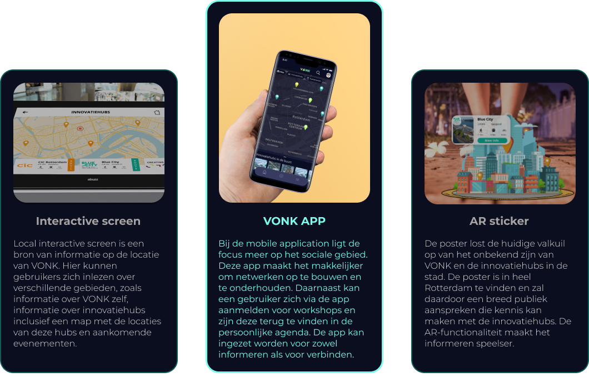
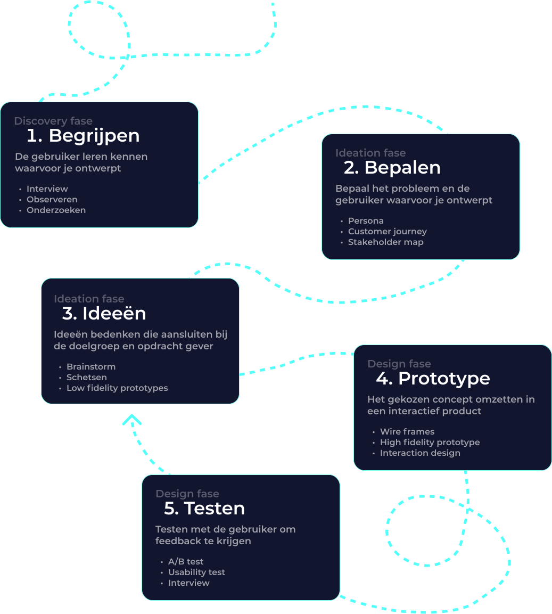
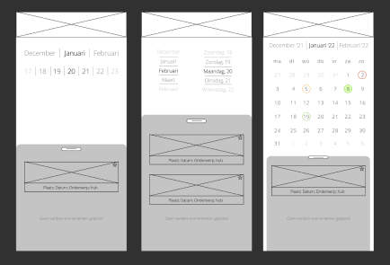
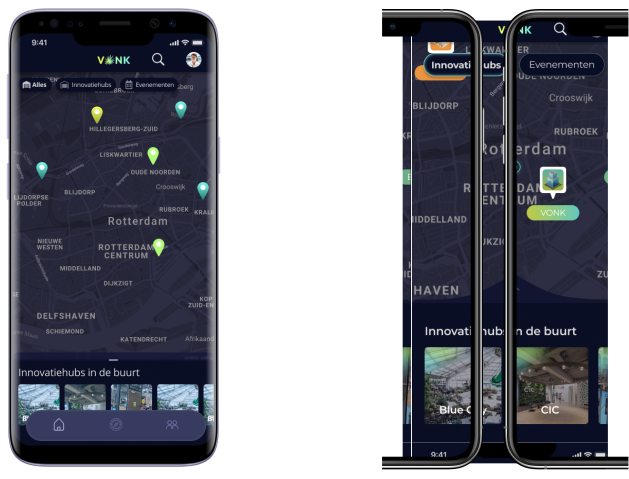

Het onderzoek
Fieldresearch
Tijdens het begin van het project was er vanuit Studio PR1ME nog weinig kennis over de verschillende innovatiehubs in Rotterdam. Om meer kennis over deze innovatiehubs te verkrijgen is fieldresearch een belangrijk onderdeel geweest.
Daarnaast zijn er ook interviews afgenomen met een superuser om een idee te krijgen waar rekening mee gehouden kon worden, zoals het afbakenen van de doelgroep.


Interview
Om een beter beeld te krijgen van hoe een innovatienetwerk mogelijk opgestart kan worden, heeft er een interview plaatsgevonden met Eva Saeboe, een medewerker van innovatienetwerk Jeugd. Eva benadrukte het belang van het afbakenen vana de doelgroep, zodat de ontwerpen op de interesses en gevoelens van de doelgroep aansluiten.
Inzichten
Tijdens het deskresearch en fieldresearch zijn belangrijke inzichten geconstateerd.

Concepten
Vanuit deze inzichten is er onderzoek gedaan naar de behoeften van de doelgroep en de opdrachtgever en zijn hier drie concepten uit ontwikkeld. Deze concepten zijn lofi ontwerpen en op itererende wijze bij de doelgroep getest.

Uiteindelijke Concept - Vonk App
Uiteindelijk is gekozen om verder te gaan met het ontwikkelen van de applicatie VONK. Deze keuze is gebaseerd op basis van de behoeften van de doelgroep én de voorkeur van de opdrachtgever.
Design proces

Schetsen
Door de ideeën op papier uit te schetsen kon op een snelle manier gekeken worden welke functionaliteiten in de app moest komen.

Wireframes
Tijdens het maken van de wireframes is gefocust op de interactie die de gebruiker met de app heeft.

Prototypen
Tijdens het project zijn verschillende prototypes gemaakt en getest met de doelgroep door middel van A/B en user testen.

Stijl
Er is gekozen voor een stijl die past bij het logo van VONK, wat innovatie en frisheid uitstraalt. Het gebruik van deze bijpassende kleuren en de layout/knoppen brengt de innovatie en frisse interpretatie over op de gebruiker.
Kleuren

VONK logo